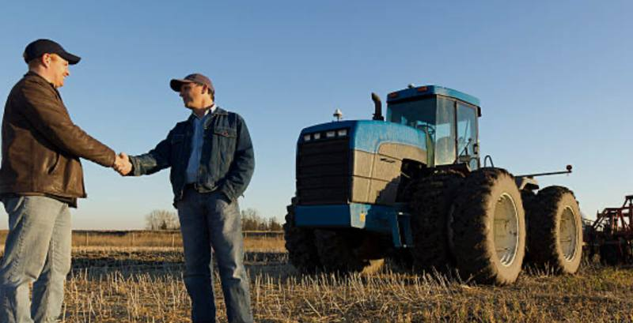

Attributed to John Wilson, New York Agricultural Fair of 1850, c. 1850, oil on board, Albany Institute of History & Art, gift of Ellen H. Leslie, 2013.21. Public domain.
Stalls, hay bales and a tractor at a country fair (Stands, bottes de paille et tracteur dans une fête agricole)
A Day at the Fair: Selling at a UK Country Show
Bac pro sales · lycée agricole · B1
The fair
Spirale de Gorse
Méthode conçue par Madame Carole Paoli Pompougnac. Le nom rend hommage à sa grand-mère par alliance, Madame Armandine Gorse, avec un S. On gravit un texte, un audio ou une image comme une pente : chaque tour est une prise plus haute. On part de ce qui saute aux yeux, puis l'attention se resserre, jusqu'à la pointe, le sommet où l'essentiel se laisse voir. Quatre tours, puis la pointe. À appliquer, dans chaque lesson, au document principal (texte, image ou audio). Les réponses détaillées restent en Version prof.
Spirale de Gorse, quatre tours puis la pointe. Méthode conçue par Madame Carole Paoli Pompougnac.
1
Je remarque (I notice)
Ce qui saute aux yeux, la première impression.
I notice… / This is about…
2
Je repère (I spot)
Un détail, un passage, un élément plus net.
I spot… / The key word is…
3
Je comprends (I understand)
Ce que ces éléments permettent de comprendre.
This shows that… / They have in common…
4
J'anticipe (I anticipate)
La visée du texte, ce qu'il faut en faire.
The text wants me to… / I anticipate…
5
Je trouve le sens (I find the meaning)
La pointe : l'essentiel que l'on peut défendre, et sa limite.
The point is… / But I must not…
Lesson 1. The fair
Minutage, version prof
Minutes
Étape
Ce que font les élèves
Activité
0 à 4
Accueil
Observation du tableau attribué à John Wilson et des photos de la foire.
CE
4 à 14
Spirale de Gorse
Quatre tours, puis la pointe, sur le tableau ou le début du texte The fair.
CE, PO
14 à 28
Compréhension de l'écrit
Lecture de The fair. Look at the photos. What can you see?
CE
28 à 38
Compréhension de l'oral
Vidéos existantes de la Great Yorkshire Show, en libre accès. Noter trois choses vues ou entendues.
CO
38 à 48
Production
Dire puis écrire : Where and when does the show take place? What does Emma do at 8 a.m.?
PO, PE
48 à 52
Trace écrite et homework
Recopiage, consigne.
PE
52 à 55
Marge
Rangement, sortie de la salle. La lesson dure 55 minutes, minutée sur 52.
Exemple travaillé, version prof
Spirale de Gorse, document : le tableau ou le premier paragraphe. Je remarque : une foule, des stands, une fête agricole. Je repère : Harrogate, juillet, plus de 130 000 visiteurs, le hall alimentaire. Je comprends : on vient voir les animaux, mais on achète aussi fromage, confiture, miel, gâteaux, jus de pomme. J'anticipe : le texte prépare le métier de vendeur, pas seulement le décor. Je trouve le sens : la foire est un lieu de vente, et de parole. On peut situer la scène ; on ne peut pas encore dire comment Emma convainc un client.
Homework : Learn eight words (fair, stall, visitor, farmer, produce, display, sample, customer). Write five sentences about what you see in the painting or in a photo of the show.
Trace écrite : « Every July, more than 130,000 visitors go to the Great Yorkshire Show in Harrogate. People buy with their eyes first. »
Sortie de secours, version prof
Sortie de secours : les phrases écrites se terminent au homework ; la spirale, la lecture et la trace restent en classe.
Every July, more than 130,000 visitors go to the Great Yorkshire Show in Harrogate, in the north of England. Farmers show their best cows and sheep, but the food hall is just as popular: small producers sell cheese, jam, honey, cakes and apple juice from their stalls.
Emma is nineteen and works on her family's stall, "Dale Farm Dairy". At 8 a.m. she sets up the display: the cheeses are on wooden boards, every product has a price tag, and a plate of offered samples is ready at the front. "People buy with their eyes first," her mother says. At 9 o'clock the gates open, and the first customers arrive.
Some customers only want to taste. Others ask many questions: Is it organic? How long does it keep? Can I pay by card? A man from London wants the strongest cheese, and an old lady is looking for something cheaper than the blue cheese. Emma stays smiling, gives advice and suggests a gift box for three cheeses. By 5 p.m. she has sold almost everything, and a shop owner has asked for her business card: he wants to sell Dale Farm cheese in his shop.

A farmer and a sales adviser shake hands (Un agriculteur et un conseiller vente se serrent la main)
Look at the photos. What can you see? Where are the people? What are they doing?
Méthode conçue par Madame Carole Paoli Pompougnac. Le nom rend hommage à sa grand-mère par alliance, Madame Armandine Gorse, avec un S. On gravit un texte, un audio ou une image comme une pente : chaque tour est une prise plus haute. On part de ce qui saute aux yeux, puis l'attention se resserre, jusqu'à la pointe, le sommet où l'essentiel se laisse voir. Quatre tours, puis la pointe. À appliquer, dans chaque lesson, au document principal (texte, image ou audio). Les réponses détaillées restent en Version prof.
Spirale de Gorse, quatre tours puis la pointe. Méthode conçue par Madame Carole Paoli Pompougnac.
1
Je remarque (I notice)
Ce qui saute aux yeux, la première impression.
I notice… / This is about…
2
Je repère (I spot)
Un détail, un passage, un élément plus net.
I spot… / The key word is…
3
Je comprends (I understand)
Ce que ces éléments permettent de comprendre.
This shows that… / They have in common…
4
J'anticipe (I anticipate)
La visée du texte, ce qu'il faut en faire.
The text wants me to… / I anticipate…
5
Je trouve le sens (I find the meaning)
La pointe : l'essentiel que l'on peut défendre, et sa limite.
The point is… / But I must not…
Lesson 2. Expanding your vocabulary
Minutage, version prof
Minutes
Étape
Ce que font les élèves
Activité
0 à 4
Mise en route
Nommer cinq objets déjà vus sur un stand.
PO
4 à 14
Spirale de Gorse
Quatre tours, puis la pointe, sur la liste de vocabulaire.
CE, PO
14 à 26
Expanding your vocabulary
Dire, répéter, associer anglais et français : stall, customer, local produce, price tag, bargain, haggle, change, receipt, fresh, homemade, sample, bag.
CO, PO
26 à 36
Compréhension de l'oral
Six mots dictés ; les élèves écrivent le mot et s'en servent dans une phrase.
CO
36 à 48
Production
Légender un stand en huit mots, puis le présenter en une minute.
PE, PO
48 à 52
Trace écrite et homework
Recopiage, consigne.
PE
52 à 55
Marge
Rangement, sortie de la salle. La lesson dure 55 minutes, minutée sur 52.
Exemple travaillé, version prof
Spirale de Gorse, document : la liste. Je remarque : des mots du stand et de la caisse. Je repère : sample, price tag, receipt, bargain. Je comprends : chaque mot sert à un geste (étiqueter, faire goûter, rendre la monnaie). J'anticipe : la liste prépare le dialogue de vente, pas une traduction isolée. Je trouve le sens : le bon mot fait avancer la vente. On peut nommer le stand ; on ne peut pas encore conseiller un fromage.
Homework : Learn the twelve words. Write six sentences, one for each pair (sample / price tag / receipt, etc.).
Trace écrite : « a stall, a customer, local produce, a price tag, a sample, a receipt, change, homemade. »
Sortie de secours, version prof
Sortie de secours : la présentation orale se termine au homework ; six mots et la trace restent en classe.
a stall
un stand
a customer
un client
local produce
produits locaux
a price tag
une étiquette de prix
a bargain
une bonne affaire
to haggle
marchander
change
la monnaie
a receipt
un ticket de caisse
fresh
frais
homemade
fait maison
a sample
un échantillon à goûter
a bag
un sac
Comprehension
Spirale de Gorse
Méthode conçue par Madame Carole Paoli Pompougnac. Le nom rend hommage à sa grand-mère par alliance, Madame Armandine Gorse, avec un S. On gravit un texte, un audio ou une image comme une pente : chaque tour est une prise plus haute. On part de ce qui saute aux yeux, puis l'attention se resserre, jusqu'à la pointe, le sommet où l'essentiel se laisse voir. Quatre tours, puis la pointe. À appliquer, dans chaque lesson, au document principal (texte, image ou audio). Les réponses détaillées restent en Version prof.
Spirale de Gorse, quatre tours puis la pointe. Méthode conçue par Madame Carole Paoli Pompougnac.
1
Je remarque (I notice)
Ce qui saute aux yeux, la première impression.
I notice… / This is about…
2
Je repère (I spot)
Un détail, un passage, un élément plus net.
I spot… / The key word is…
3
Je comprends (I understand)
Ce que ces éléments permettent de comprendre.
This shows that… / They have in common…
4
J'anticipe (I anticipate)
La visée du texte, ce qu'il faut en faire.
The text wants me to… / I anticipate…
5
Je trouve le sens (I find the meaning)
La pointe : l'essentiel que l'on peut défendre, et sa limite.
The point is… / But I must not…
Lesson 3. Comprehension
Minutage, version prof
Minutes
Étape
Ce que font les élèves
Activité
0 à 4
Relance
Relire The fair en silence.
CE
4 à 14
Spirale de Gorse
Quatre tours, puis la pointe, sur une phrase du texte (« People buy with their eyes first » ou la demande du commerçant).
CE, PO
14 à 32
Compréhension de l'écrit
Questions existantes A, B et C, réponses en phrases complètes.
CE
32 à 40
Compréhension de l'oral
Court dialogue : un client pose trois questions (organic, how long, card).
CO
40 à 48
Production
Répondre aux trois questions du client, à l'oral puis à l'écrit.
PO, PE
48 à 52
Trace écrite et homework
Recopiage, consigne.
PE
52 à 55
Marge
Rangement, sortie de la salle. La lesson dure 55 minutes, minutée sur 52.
Exemple travaillé, version prof
Questions et corrigés existants à conserver (Version prof). Dialogue d'entraînement (Version prof) : « Is it organic? How long does it keep? Can I pay by card? Yes, it is organic. It keeps for three weeks in the fridge. We take cards and cash. »
Spirale de Gorse, document : « People buy with their eyes first. » Je remarque : une phrase sur le regard. Je repère : Emma installe fromages, étiquettes, échantillons dès 8 heures. Je comprends : un stand attrayant prépare l'achat, et l'échantillon le confirme. J'anticipe : la phrase prépare le conseil, pas seulement la déco. Je trouve le sens : on vend avec les yeux, puis avec des réponses justes. On peut expliquer le geste d'Emma ; on ne peut pas encore fixer un prix.
Homework : Réponds par écrit aux questions C (read between the lines) si elles n'ont pas été finies. Write the three customer questions and Emma's answers.
Trace écrite : « Some customers only want to taste. Emma suggests a gift box for three cheeses. At the end of the day, a shop owner asks for her business card. »
Sortie de secours, version prof
Sortie de secours : la partie C passe au homework ; A, B, la spirale et la trace restent en classe.
Read the text in “Reading”. Answer in full sentences, then tap a question to check your answer.
A. Find the information
Where and when does the show take place?
In Harrogate, in the north of England, every July.
What do small producers sell in the food hall?
Cheese, jam, honey, cakes and apple juice.
What does Emma do at 8 a.m.?
She sets up the display: cheeses on boards, price tags and offered samples.
Which three questions do customers ask?
Is it organic? How long does it keep? Can I pay by card?
What happens at the end of the day?
She has sold almost everything and a shop owner asks for her business card.
B. True or false? Justify with a quotation.
The food hall is not very popular.
False: “the food hall is just as popular.”
All customers buy something.
False: “Some customers only want to taste.”
Emma suggests a bigger purchase.
True: “suggests a gift box for three cheeses.”
C. Read between the lines
What does “People buy with their eyes first” mean?
The display must be attractive: customers buy what looks good.
Why does Emma offer samples?
Because customers who taste are more likely to buy.
Why is the shop owner's request good news for the family business?
They can sell all year round, not only at the show: more customers and more money.
Which qualities of a good seller does Emma show? Give two.
She is patient and smiling, she gives advice, she sells more (gift box).
Grammar: asking questions
Spirale de Gorse
Méthode conçue par Madame Carole Paoli Pompougnac. Le nom rend hommage à sa grand-mère par alliance, Madame Armandine Gorse, avec un S. On gravit un texte, un audio ou une image comme une pente : chaque tour est une prise plus haute. On part de ce qui saute aux yeux, puis l'attention se resserre, jusqu'à la pointe, le sommet où l'essentiel se laisse voir. Quatre tours, puis la pointe. À appliquer, dans chaque lesson, au document principal (texte, image ou audio). Les réponses détaillées restent en Version prof.
Spirale de Gorse, quatre tours puis la pointe. Méthode conçue par Madame Carole Paoli Pompougnac.
1
Je remarque (I notice)
Ce qui saute aux yeux, la première impression.
I notice… / This is about…
2
Je repère (I spot)
Un détail, un passage, un élément plus net.
I spot… / The key word is…
3
Je comprends (I understand)
Ce que ces éléments permettent de comprendre.
This shows that… / They have in common…
4
J'anticipe (I anticipate)
La visée du texte, ce qu'il faut en faire.
The text wants me to… / I anticipate…
5
Je trouve le sens (I find the meaning)
La pointe : l'essentiel que l'on peut défendre, et sa limite.
Quatre tours, puis la pointe, sur une question indirecte ou un prix au pound.
CE, PO
14 à 24
Compréhension de l'oral
Quatre réponses de clients ou de vendeurs ; trouver la question.
CO
24 à 38
Exercices existants
Find the question ; make it polite ; correct the mistake ; conversions (pound, pint, mile, 2 pounds at 6 pounds a pound).
PE
38 à 48
Production orale
En binômes : cinq questions, dont une indirecte, une sur le prix, une comparaison.
PO
48 à 52
Trace écrite et homework
Recopiage, consigne.
PE
52 à 55
Marge
Rangement, sortie de la salle. La lesson dure 55 minutes, minutée sur 52.
Exemple travaillé, version prof
Exercices, conversions et corrigés existants à conserver (1 pound ≈ 454 g ; 1 pint ≈ 0,57 l ; 1 mile ≈ 1,6 km ; 1 acre = 0,4 ha ; 1 foot = 30 cm).
Spirale de Gorse, document : « Could you tell me how much the honey costs? » Je remarque : une question sur le prix, plus polie. Je repère : l'ordre des mots, sans does. Je comprends : la politesse aide à vendre, autant qu'un échantillon. J'anticipe : la forme prépare le jeu de rôle, pas un exercice isolé. Je trouve le sens : bien demander, et bien mesurer, rend le prix clair. On peut former la phrase ; on ne peut pas encore recommander un produit.
Homework : Finish the indirect questions and two conversions. Write four polite questions a customer might ask at the stall.
Trace écrite : « Could you tell me how much the honey costs? Do you know if the cheese is organic? 1 pound ≈ 454 g. Cheese costs 6 pounds a pound, so 2 pounds cost 12 pounds. »
Sortie de secours, version prof
Sortie de secours : les conversions se terminent au homework ; les questions polies et la trace restent en classe.
A good seller answers customer questions and also asks questions to understand what the customer needs. Study the rules, then do the tasks.
1. Question forms
Yes/No
Is it organic? / Do you take cards? / Can I try it?
Wh- questions
How much is it? / How long does it keep? / Who made it?
Polite requests
Could I help you? / Would you like a bag? / Can I ask you to wait a moment?
Indirect questions
Could you tell me how much this cheese costs? (no “does”, normal word order)
2. Find the question. Tap to check.
Answer: “It's £4.50 a jar.”
How much is it? / How much does a jar cost?
Answer: “It keeps for three weeks in the fridge.”
How long does it keep?
Answer: “Yes, we take cards and cash.”
Do you take cards? / Can I pay by card?
Answer: “My grandfather started the farm in 1985.”
Who started the farm? / When did the farm start?
3. Make it polite: write an indirect question.
How much does the honey cost? → Could you tell me…
Could you tell me how much the honey costs?
Is the cheese organic? → Do you know…
Do you know if the cheese is organic?
Where is the café? → Could you tell me…
Could you tell me where the café is?
What would you like? → May I ask…
May I ask what you would like?
4. Correct the mistake.
How much costs the jam?
How much does the jam cost?
Do you know where are the toilets?
Do you know where the toilets are?
Measurements
Useful conversions: 1 acre = 0.4 ha | 1 mile = 1.6 km | 1 pound (lb) = 454 g | 1 stone = 6.35 kg | 1 pint = 0.57 l | 1 foot = 30 cm
A customer wants a pound of cheese. How many grams is it?
About 454 g.
A jar of honey weighs 340 g. Is it more or less than a pound?
Less than a pound (454 g).
A bottle of apple juice is 1 pint. How many litres?
About 0.57 litres.
The car park is 2 miles away. How many kilometres?
About 3.2 km.
Cheese costs £6 a pound. How much for 2 pounds?
£12.
Comparing products
Comparatives: cheaper than, stronger than, more expensive than, better than. Superlatives: the cheapest, the strongest, the most popular, the best. Complete, then tap to check.
The blue cheese is ___ (expensive) than the cheddar.
more expensive
This cheddar is ___ (strong) than the mild one.
stronger
The gift box is ___ (good) deal on the stall.
the best
Honey is ___ (popular) product today.
the most popular
The small jar is ___ (cheap) than the big one.
cheaper
Our juice is ___ (fresh) than supermarket juice.
fresher
Advise a customer
A customer hesitates between two products. Compare them and recommend one.
Sentence starters: This one is cheaper than…, but… / If you like strong flavours, the best is… / I would recommend… because…
Your turn
Spirale de Gorse
Méthode conçue par Madame Carole Paoli Pompougnac. Le nom rend hommage à sa grand-mère par alliance, Madame Armandine Gorse, avec un S. On gravit un texte, un audio ou une image comme une pente : chaque tour est une prise plus haute. On part de ce qui saute aux yeux, puis l'attention se resserre, jusqu'à la pointe, le sommet où l'essentiel se laisse voir. Quatre tours, puis la pointe. À appliquer, dans chaque lesson, au document principal (texte, image ou audio). Les réponses détaillées restent en Version prof.
Spirale de Gorse, quatre tours puis la pointe. Méthode conçue par Madame Carole Paoli Pompougnac.
1
Je remarque (I notice)
Ce qui saute aux yeux, la première impression.
I notice… / This is about…
2
Je repère (I spot)
Un détail, un passage, un élément plus net.
I spot… / The key word is…
3
Je comprends (I understand)
Ce que ces éléments permettent de comprendre.
This shows that… / They have in common…
4
J'anticipe (I anticipate)
La visée du texte, ce qu'il faut en faire.
The text wants me to… / I anticipate…
5
Je trouve le sens (I find the meaning)
La pointe : l'essentiel que l'on peut défendre, et sa limite.
The point is… / But I must not…
Lesson 5. Comparing products and your turn
Minutage, version prof
Minutes
Étape
Ce que font les élèves
Activité
0 à 4
Comparatifs
cheaper, stronger, more expensive, better ; the cheapest, the most popular, the best.
CE
4 à 12
Spirale de Gorse
Quatre tours, puis la pointe, sur la consigne du post ou une comparaison de deux fromages.
CE, PO
12 à 22
Comparer et conseiller
Exercices existants, puis « Advise a customer ».
PE, PO
22 à 40
Production écrite
Post existant pour la page Dale Farm Dairy, 80 à 120 mots : produits, comparaison, prix, offre.
PE
40 à 50
Jeu de rôle ou affiche
Jeu de rôle existant, ou affiche du stand (produit, prix, offre, un superlatif).
PO, PE
50 à 52
Trace écrite et homework
Recopiage, consigne.
PE
52 à 55
Marge
Rangement, sortie de la salle. La lesson dure 55 minutes, minutée sur 52.
Exemple travaillé, version prof
Exercices de comparatifs et corrigés existants à conserver. Amorces du post et du jeu de rôle à conserver.
Spirale de Gorse, document : la consigne du post. Je remarque : on invite des clients au stand. Je repère : produits, comparaison, prix, offre spéciale. Je comprends : un bon message vend en comparant, sans crier. J'anticipe : le post prépare la parole de vente, pas une publicité vague. Je trouve le sens : comparer pour conseiller, c'est le cœur du métier à la foire. On peut écrire l'invitation ; on ne doit pas oublier le prix et le ticket.
Homework : Finish the post if needed. Complete the poster. Learn the role-play starters.
Trace écrite : « This one is cheaper than…, but… If you like strong flavours, the best is… I would recommend… because… That's …, here is your change. »
Sortie de secours, version prof
Sortie de secours : l'affiche se termine au homework ; le post (même inachevé) et la trace restent en classe.
1. Write (80–120 words)
Write a post for the Dale Farm Dairy page to invite customers to the stall at the show: present the products, compare two of them, give prices and a special offer.
Sentence starters: Come and visit us at… / Our… is the most popular… / It is cheaper/stronger than… / Special offer:… / See you at stall number…!
2. Role-play in pairs
Student A is the customer, Student B is the seller. The customer asks at least five questions (one indirect question, one about price, one comparing two products). The seller greets, offers a sample, compares, suggests a bigger purchase, gives the price and the change.
Sentence starters: Good morning, can I help you? / Could you tell me how much…? / Would you like to try…? / This one is stronger than… / That's £…, here is your change.
3. Make a poster
Design a poster for your stall: product, price, special offer and one sentence with a superlative.
L’élève ne peut pas venir en classe ou est hospitalisé
A Day at the Fair: Selling at a UK Country Show · Première baccalauréat professionnel, vente et lycée agricole, B1 · contexte de la vie professionnelle (vente de produits locaux sur un stand)
Comment travailler
Faire les 5 lessons dans l’ordre, une lesson par moment de travail de 30 à 40 minutes. Les jours de fatigue, faire seulement la version courte (15 minutes) : rien n’est perdu, la suite se rattrape au retour.
Ouvrir la page de la lesson (lien « Documents ») : textes, images, vidéos et enregistrements y sont en libre accès. Sans connexion, travailler avec la fiche imprimable (PDF, Word ou LibreOffice) proposée en téléchargement.
Chercher d’abord, seul et sans traducteur, puis cliquer sur « Afficher la réponse » pour se corriger, avec un stylo d’une autre couleur.
Production orale et interaction en travail seul : enregistrer un message vocal (téléphone ou ENT), ou écrire le texte qui serait dit, y compris les répliques des deux rôles.
Recopier la trace écrite de chaque lesson dans le cahier : elle sert pour les évaluations.
Les évaluations sont accessibles dans cette version : les faire au moment indiqué, sans aide, sans document sauf mention contraire, puis les envoyer.
Envoyer le travail par la messagerie de l’ENT (photo nette ou fichier) ou le rendre au retour. L’enseignante corrige et renvoie un commentaire.
CE Observer le tableau attribué à John Wilson et les photos de la foire (4 min).
Spirale de Gorse sur le tableau ou le début du texte The fair : quatre tours, puis la pointe, sur la fiche spirale de la lesson (7 min).
CE Lire The fair et répondre : Look at the photos. What can you see? (10 min).
CO Regarder deux fois une vidéo de la Great Yorkshire Show (liens de la lesson) et noter trois choses vues ou entendues (7 min).
POPE Répondre à voix haute (enregistrement), puis par écrit : Where and when does the show take place? What does Emma do at 8 a.m.? (7 min).
Trace écrite à recopier dans le cahier
The Great Yorkshire Show takes place in Harrogate in July. More than 130,000 visitors come to see the animals, and they also buy cheese, jam, honey, cakes and apple juice in the food hall.
Je vérifie
Where and when does the show take place?
In Harrogate, in July.
How many visitors come?
More than 130,000.
Version courte (15 min) : lire The fair et répondre aux deux questions par écrit.
À envoyer ou à rendre : la spirale, les notes de la vidéo, l’enregistrement et les réponses écrites.
PO Nommer à voix haute cinq objets déjà vus sur un stand (2 min).
Spirale de Gorse sur la liste de vocabulaire : quatre tours, puis la pointe, sur la fiche spirale de la lesson (7 min).
Vocabulary Dire, répéter et associer anglais et français : stall, customer, local produce, price tag, bargain, haggle, change, receipt, fresh, homemade, sample, bag (10 min).
CO Un proche dicte six mots de la liste ; écrire chaque mot et l’employer dans une phrase. Sans lecteur, se tester avec des flashcards (6 min).
PEPO Légender un stand en huit mots, puis le présenter en une minute enregistrée (10 min).
Trace écrite à recopier dans le cahier
At the stall: a price tag, a sample to taste, local produce, homemade jam. At the till: the change and the receipt.
Each word goes with a gesture: label, let the customer taste, give the change.
Je vérifie
What is a sample?
A small piece or quantity to taste before buying.
Version courte (15 min) : apprendre la liste et légender le stand.
À envoyer ou à rendre : la spirale, la dictée et la présentation enregistrée.
Spirale de Gorse sur la phrase People buy with their eyes first : quatre tours, puis la pointe, sur la fiche spirale de la lesson (7 min).
CE Répondre aux questions A, B et C en phrases complètes (12 min).
CO Court dialogue lu deux fois par un proche ou par l’enseignante (enregistrement) : un client pose trois questions (bio, conservation, carte bancaire) (5 min).
POPE Répondre aux trois questions du client, d’abord à voix haute (enregistrement), puis par écrit (8 min).
Trace écrite à recopier dans le cahier
People buy with their eyes first: from 8 a.m., Emma sets out the cheeses, the labels and the samples.
A customer may ask: Is it organic? How long does it keep? Can I pay by card?
Je vérifie
Answer the customer: “Can I pay by card?”
Yes, we take cards and cash.
Version courte (15 min) : répondre aux questions A et B.
À envoyer ou à rendre : la spirale, les réponses A à C et les réponses au client.
Lesson 4 · Asking questions and measurements
How do I ask polite questions and give prices and measures?
Étude de la langue Relire les formes : questions fermées, questions en wh-, demandes polies, questions indirectes (4 min).
Spirale de Gorse sur une question indirecte ou un prix au pound : quatre tours, puis la pointe, sur la fiche spirale de la lesson (7 min).
CO Quatre réponses de clients ou de vendeurs lues par un proche : retrouver la question (5 min).
Étude de la langue Exercices : find the question, make it polite, correct the mistake, puis les conversions (pound, pint, mile, 2 pounds at 6 pounds a pound) (12 min).
PI Écrire cinq questions (une indirecte, une sur le prix, une comparaison) et les réponses du vendeur, puis enregistrer l’échange en jouant les deux rôles (6 min).
Trace écrite à recopier dans le cahier
Polite indirect question: Could you tell me how much the honey costs? (no does, the subject before the verb).
Étude de la langue Comparatifs et superlatifs : cheaper, stronger, more expensive, better, the cheapest, the most popular, the best ; exercices et « Advise a customer » (8 min).
Spirale de Gorse sur la consigne du post ou la comparaison de deux fromages : quatre tours, puis la pointe, sur la fiche spirale de la lesson (7 min).
PE Post pour la page Dale Farm Dairy, 80 à 120 mots : produits, comparaison, prix, offre (15 min).
PIPE Jeu de rôle écrit puis enregistré en jouant les deux rôles, ou affiche du stand (produit, prix, offre, un superlatif) (8 min).
Trace écrite à recopier dans le cahier
The big jar is more expensive, but it is a better deal. This cheddar is stronger than the Wensleydale. Our honey is the most popular product of the stall.
Je vérifie
The small jar is three pounds, the big one is five. Which is a better deal if the big jar holds twice as much?
The big one.
Version courte (15 min) : faire les exercices de comparatifs et le plan du post.
À envoyer ou à rendre : la spirale, les exercices, le post et le jeu de rôle ou l’affiche.
Évaluation sommative au format du CCF
L’évaluation sommative de la page (format CCF) est accessible dans cette version. La faire sans aide, en notant l’heure de début et de fin ; pour l’écoute, demander l’enregistrement à l’enseignante.
Garder le lien avec la classe
Un message court à l’enseignante par l’ENT suffit pour dire où en est le travail ou poser une question, même sans avoir tout fini.
Un ou une camarade volontaire peut transmettre les documents distribués en classe et les nouvelles du groupe.
À l’hôpital ou à domicile, l’enseignant de l’école à l’hôpital ou du SAPAD peut accompagner ce parcours : lui montrer cette page.
Si une PFMP est manquée ou décalée, l’équipe de la section indique ce qui sera rattrapé ; les tâches professionnelles de ce parcours peuvent s’appuyer sur le métier préparé.
Au retour, un point de dix minutes avec l’enseignante permet de vérifier les traces écrites et de rattraper l’oral.
Évaluation au format de l'évaluation ponctuelle (version prof)
À insérer uniquement en Version prof. Entraînement au CCF du baccalauréat professionnel, ou à l'épreuve ponctuelle pour les candidats concernés. La séquence sert aussi au lycée agricole : on garde la même grille CCF du baccalauréat professionnel.
Situation A, en une lesson de 52 minutes
Minutes
Étape
Ce que font les élèves
Activité
0 à 2
Consignes
Lecture des trois parties, choix du sujet d'écriture.
Lecture
2 à 17
Compréhension de l'oral
Trois écoutes (1 min 30 au plus), une minute entre chaque écoute ; compte rendu en français.
CO
17 à 32
Compréhension de l'écrit
Document de 15 lignes au plus, compte rendu en français.
CE
32 à 50
Expression écrite
Un sujet au choix, 100 à 120 mots au moins.
PE
50 à 52
Ramassage
Relecture, comptage des mots.
52 à 55
Marge
Rangement, sortie de la salle. La lesson dure 55 minutes, minutée sur 52.
Compréhension de l'oral. Transcript (version prof seulement) :
> Good morning, can I help you? I'd like a strong cheese, not too expensive. This blue cheese is six pounds a pound. Would you like to try a sample? Yes, please. It's stronger than the cheddar, but the cheddar is cheaper. I'll take the cheddar, a pound, and a jar of honey. That's twelve pounds for the cheese and four pounds fifty for the honey. Card or cash? Card, please. Here's your receipt. Thank you, see you at the show!
Consigne : « Écoutez trois fois. Rendez compte en français : le lieu, ce que le client cherche, ce qu'il goûte, ce qu'il achète, les prix et le mode de paiement. »
Corrigé (version prof). À un stand de foire, le client veut un fromage fort, pas trop cher. Le bleu est à 6 livres la livre, plus fort que le cheddar, mais le cheddar est moins cher. Le client prend une livre de cheddar (12 livres) et un pot de miel (4,50 livres), paie par carte, reçoit un ticket.
Compréhension de l'écrit. Texte d'entraînement (15 lignes au plus) :
> Every July, the Great Yorkshire Show in Harrogate attracts more than 130,000 visitors. In the food hall, small producers sell cheese, jam, honey, cakes and apple juice from their stalls. Emma, who is nineteen, works on her family's stall, Dale Farm Dairy. She sets up the display early: cheeses on wooden boards, a price tag on every product, and a plate of samples at the front. Her mother often says: "People buy with their eyes first." Some customers only want to taste. Others ask if the cheese is organic, how long it keeps, or if they can pay by card. By the end of the day Emma has sold almost everything, and a shop owner has asked for her business card. The show lasts a few days, but a good contact can last all year.
Source : texte d'entraînement écrit pour la classe, d'après le texte de la séquence.
Questions, compte rendu en français : Où et quand se tient la foire ? Que vend-on dans le hall alimentaire ? Comment Emma prépare-t-elle le stand ? Que demandent les clients ? Pourquoi la carte de visite est-elle une bonne nouvelle ?
Corrigé (version prof). Harrogate, chaque juillet, plus de 130 000 visiteurs. Fromage, confiture, miel, gâteaux, jus de pomme. Emma installe planches, étiquettes, échantillons. Les clients demandent si c'est bio, la durée de conservation, le paiement par carte. Une carte de visite ouvre une vente toute l'année, pas seulement pendant la foire.
Expression écrite. Choisissez un sujet. Écrivez 100 à 120 mots au moins.
Sujet 1 (vie quotidienne) : Describe a market or a fair you know. What would you buy, and why?
Sujet 2 (vie professionnelle) : Write a post for the Dale Farm Dairy page: present two products, compare them, give a price and a special offer.
Situation B, 10 minutes par élève (5 minutes de présentation, 5 minutes d'échange)
Sujets : présenter le stand Dale Farm Dairy ; conseiller un client entre deux fromages ; raconter la journée d'Emma. Une image et des notes sont autorisées, pas de texte rédigé.
Questions d'échange : Is it organic? How much is a pound? Do you take cards? Which one is stronger? Why is the shop owner's request good news?
Évaluation sommative
Même format CCF, à placer après la Lesson 5, en Version prof. On change les documents.
Variante, compréhension de l'oral (transcript, version prof).
> Could you tell me how long the jam keeps? It keeps for three months, once opened, in the fridge. Is the small jar cheaper than the big one? Yes, the small one is three pounds, the big one is five, so the big one is a better deal. Would you like a bag? Yes, please. That's five pounds, here is your change.
Corrigé : le client demande la durée de conservation (trois mois au frais une fois ouvert), compare les pots (le petit à 3 livres, le grand à 5, meilleure affaire), prend le grand, demande un sac, reçoit la monnaie sur 5 livres.
Variante, compréhension de l'écrit. Texte : « A good seller at a country show does three things. First, the stall must look attractive. Second, the seller offers a sample and answers questions politely, including indirect questions. Third, the seller can compare two products and suggest a bigger purchase, like a gift box. A smile is useful. A clear price and a receipt are necessary. » Questions en français sur les trois gestes, les questions polies, l'achat plus large, ce qui est utile et ce qui est nécessaire. Corrigé : stand attrayant, échantillon et réponses polies, comparaison et suggestion ; le sourire aide, le prix clair et le ticket sont nécessaires.
Variante, expression écrite. Sujet 1 : You spent a day helping at a stall. Write what you did and what you learned. Sujet 2 : A customer hesitates between honey and jam. Write what you say: one comparison, one price, one recommendation. 100 à 120 mots au moins.
L'oral sommatif reprend la Situation B, avec un autre produit que celui du post de la Lesson 5.
Grille nationale bac pro LVA (BO n° 47 du 16 décembre 2021, annexe 4), version prof
Situation A, sur 12 (chaque activité de 0 à 4, demi-points possibles) :
Degré
Compréhension de l'oral
Compréhension de l'écrit
Expression écrite
4 (4 ou 3,5)
Comprend l'essentiel des informations, perçoit la cohérence d'ensemble, identifie le point de vue ou les intentions
Mêmes critères sur le document écrit
S'exprime clairement, même avec des erreurs dans les structures complexes ; lexique varié ; expose avantages ou inconvénients ; justifie
3 (3 ou 2,5)
Relève certains des éléments porteurs de sens ; saisit certains liens entre les informations
Mêmes critères sur le document écrit
Écrit descriptif ou narratif au volume attendu ; structures simples ; lexique assez varié ; sentiments ou point de vue ; erreurs qui gênent peu
2 (2 ou 1,5)
Identifie la thématique ou l'objet principal ; comprend les informations les plus significatives et quelques détails
Mêmes critères sur le document écrit
Écrit globalement compréhensible malgré des erreurs ; cherche à exprimer une appréciation ; effort de construction
1 (1 ou 0,5)
Identifie quelques sons, mots ou éléments isolés ; comprend en partie les informations factuelles (personnes, lieux, dates)
Identifie quelques mots isolés ; comprend en partie les informations factuelles
Écrit nettement trop court ; langue en partie compréhensible ; mots isolés
Situation B, sur 8 :
Degré
Expression orale en continu (/4)
Interaction orale (/4)
4
Discours assez nuancé, informé, point de vue pertinent ; langue assez fluide, prononciation claire ; supports utilisés à bon escient
Réagit avec pertinence ; argumente et cherche à convaincre simplement ; langue assez fluide
3
Discours pertinent par rapport à la dimension culturelle ou professionnelle du sujet ; langue globalement correcte ; relativement autonome par rapport aux supports
Prend sa part dans l'échange ; sait se reprendre ou reformuler ; vocabulaire globalement approprié
2
Discours d'exposition (description, narration, explication) généralement compréhensible ; cherche à exprimer une appréciation ; se détache parfois des supports
S'efforce de prendre part, réagit simplement ; expressions mémorisées fréquentes
1
Mots isolés, énoncés très courts, nombreuses pauses ; s'appuie uniquement sur les supports
Intervient peu ; répétitions et relances fréquentes ; réponses brèves
Note finale : A (/12) + B (/8) = /20. Fiche officielle : https://cache.media.education.gouv.fr/file/47/06/8/ensel369_annexe4_1423068.pdf
Évaluation au format de l’épreuve ponctuelle et du CCF (version prof)
A Day at the Fair · Première baccalauréat professionnel, vente et lycée agricole, B1 · mise en situation professionnelle : vendre des produits locaux sur un stand
Rappel du format officiel (arrêté du 17 juin 2020, annexe V ; épreuve de langue vivante du baccalauréat professionnel ; grilles du BO n° 47 du 16 décembre 2021) : Situation A, écrite, 1 heure au plus : compréhension de l’oral (document de 1 min 30 au plus, entendu trois fois, une minute entre les écoutes, compte rendu en français) ; compréhension de l’écrit (document de 15 lignes de 70 caractères au plus, compte rendu en français) ; expression écrite (deux sujets au choix, l’un sur la vie professionnelle, l’autre sur la vie quotidienne, 100 à 120 mots au moins). Situation B, orale, 10 minutes : expression orale en continu, 5 minutes au plus, sur un travail, un projet, un produit, un service ou une expérience professionnelle, sans lecture, notes et une image autorisées ; puis interaction, 5 minutes au plus. En Première, ce sujet sert d’entraînement au CCF (évaluation formative) ; il peut servir de blanc en Terminale. Niveau visé en LVA : B1+ ; en LVB : B1. Version prof seulement.
Situation A, en une lesson de 52 minutes
Minutes
Étape
Ce que font les élèves
Activité
0 à 2
Consignes
Lecture des trois parties, choix du sujet d’expression écrite.
Lecture
2 à 17
Compréhension de l’oral
Trois écoutes (1 min 30 au plus), une minute entre les écoutes ; prise de notes ; compte rendu en français.
CO
17 à 32
Compréhension de l’écrit
Lecture du document, compte rendu en français guidé par les questions.
CE
32 à 50
Expression écrite
Un sujet au choix, 100 à 120 mots au moins.
PE
50 à 52
Ramassage
Relecture, comptage des mots, ramassage.
52 à 55
Marge
Rangement, sortie de la salle.
La lesson dure 55 minutes, minutée sur 52. En l’absence d’enregistrement, l’enseignante lit le transcript trois fois, à vitesse naturelle, une minute entre les lectures.
Compréhension de l’oral (CO)
Transcript (version prof seulement)
Hello! Welcome to our stall. Would you like to taste our cheese? This one is a Wensleydale, it's mild and a bit crumbly. This one is a farmhouse cheddar: it's stronger, and it's our best seller.
Everything here comes from our farm, ten miles from Harrogate. The cows are outside from April to October. The honey is from our own bees: a small jar is four pounds fifty, and the big jar is eight pounds, so the big one is a better deal.
If you buy three products, you get a tote bag at half price. We take cards and cash. And if you like our cheese, we're at the farmers' market in York every Saturday. Here's your change and your receipt. Enjoy the show!
Durée de lecture : 1 min 20 environ, 125 mots.
Consigne : Rendre compte en français : où l’on est et qui parle ; les deux fromages et leurs différences ; l’origine des produits ; le miel (prix et conseil) ; l’offre pour trois produits ; les paiements ; où retrouver le stand ; la fin de la vente.
Corrigé
Une vendeuse sur un stand de foire agricole, près de Harrogate.
Le Wensleydale, doux et un peu friable ; le cheddar fermier, plus fort, meilleure vente.
Tout vient de la ferme, à dix miles de Harrogate ; les vaches sont dehors d’avril à octobre.
Miel de leurs abeilles : petit pot 4,50 livres, grand pot 8 livres, le grand est plus avantageux.
Pour trois produits achetés, un sac à moitié prix.
Carte et espèces acceptées ; marché fermier d’York tous les samedis ; elle rend la monnaie et le ticket.
Compréhension de l’écrit (CE)
Every July, the Great Yorkshire Show takes place in Harrogate, in the north of England. More than 130,000 visitors come to see the best cattle, sheep and horses of the region. They also come to eat and to buy: cheese, jam, honey, cakes and bread made by local producers.
For a small farm, a stall at the show is hard work but a great opportunity. From eight in the morning, the sellers set out the products, the price tags and the samples. People buy with their eyes first, so the stall must be clean, colourful and easy to read.
Selling is also talking. Visitors ask where a product comes from, how it is made and how long it keeps. A seller who can answer with precise figures, compare two products honestly and suggest a good deal sells more. Many visitors come back later to the farm shop or to a farmers' market.
Texte d’entraînement écrit pour la classe à partir des documents de la séquence (lessons 1 à 3).
Longueur : 817 caractères environ, soit une quinzaine de lignes de 70 caractères. Le jour du CCF, un document authentique inconnu des élèves, de même longueur et sur le même thème, remplace ce texte d’entraînement.
Questions, réponses en français
Présenter la Great Yorkshire Show : lieu, date, public.
Que viennent faire les visiteurs ?
Pourquoi un stand est-il une occasion pour une petite ferme ? Que font les vendeurs dès le matin ?
Quelles questions les visiteurs posent-ils ?
Quelles qualités du vendeur font vendre davantage ?
Corrigé
À Harrogate, dans le nord de l’Angleterre, chaque mois de juillet ; plus de 130 000 visiteurs.
Voir le meilleur bétail de la région (vaches, moutons, chevaux), manger et acheter des produits locaux.
C’est beaucoup de travail mais une belle occasion ; dès 8 h, ils installent les produits, les étiquettes de prix et les échantillons : le stand doit être propre, coloré, lisible.
D’où vient le produit, comment il est fait, combien de temps il se conserve.
Répondre avec des chiffres précis, comparer honnêtement, proposer une bonne affaire ; beaucoup reviennent ensuite à la boutique de la ferme ou au marché.
Expression écrite (PE)
Deux sujets au choix. Écrire 100 à 120 mots au moins.
Sujet 1, vie professionnelle : You sell products from a local farm. Write an email to a shop manager in England: present two products, give their prices, compare them, and suggest a meeting at the next fair.
Sujet 2, vie quotidienne : You spent a day at a fair or a market. Write a message to a friend: where you went, what you saw, what you bought, and why you would go again.
Éléments de corrigé
Sujet 1 : registre professionnel, deux produits avec prix, comparaison (stronger than, a better deal), proposition de rencontre.
Sujet 2 : récit au prétérit, description, avis justifié.
Lexique du stand (price tag, sample, local produce, receipt, change), 100 mots au moins. Hors sujet si aucun produit n’est présenté.
Situation B, 10 minutes par élève
Minutes
Étape
Ce que font les élèves
Activité
0 à 4
Installation
Ordre de passage ; les autres élèves préparent leur fiche de mots-clés.
Lecture
4 à 14
Passage
5 minutes de présentation sans lecture, puis 5 minutes d’échange.
PO, interaction
Ensuite
Passages suivants
Même déroulé, un élève toutes les dix minutes.
PO, interaction
Image d’appui possible (déjà sur la page de la séquence).
Consigne : présenter un produit local (de l’exploitation, de l’entreprise de PFMP ou de la région) comme sur un stand : origine, fabrication, prix, conservation, un argument de vente. Cinq minutes au plus, notes et une image autorisées, sans lecture.
Questions d’interaction (l’examinateur en choisit quatre ou cinq) :
Where does this product come from?
How long does it keep?
Could you tell me how much the big jar costs?
Which one would you recommend for a present?
What do you do if a customer wants to pay by card and the machine does not work?
Have you ever worked on a stall? How was it?
Éléments de corrigé
Produit précis, chiffres justes, comparaison honnête, argument de vente.
Interaction : jeu de rôle vendeur et client possible, questions indirectes comprises, rendu de monnaie.
Hors sujet si aucun produit réel n’est présenté.
Grille d’évaluation, cinq activités langagières (d’après la grille nationale du bac pro, BO n° 47 du 16 décembre 2021)
Chaque activité langagière est notée sur 20, puis compte pour un cinquième de la note finale. Repères de classe, alignés sur le B1+ visé en LVA (B1 en LVB).
Activité
1 à 5
6 à 10
11 à 15
16 à 20
CO
Quelques mots isolés
Le sujet général est repéré
Les informations principales sont rendues en français
L’essentiel, des détails et le point de vue sont rendus
CE
Quelques éléments isolés
Le thème et quelques faits
Les informations principales, liées entre elles
L’essentiel, des détails et l’implicite
PE
Hors sujet ou trop court
Sujet abordé, langue encore hésitante
Sujet traité, 100 mots au moins, langue compréhensible
Propos organisé et nuancé, lexique de la séquence, langue assez sûre
PO en continu
Lit ses notes, propos très court
Présente avec aide, phrases isolées
Présente sans lire, propos clair et relié
Présente avec aisance, exemples précis, lexique professionnel